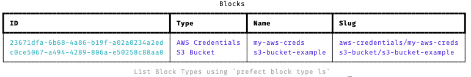
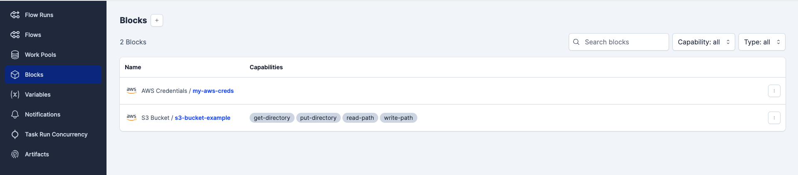
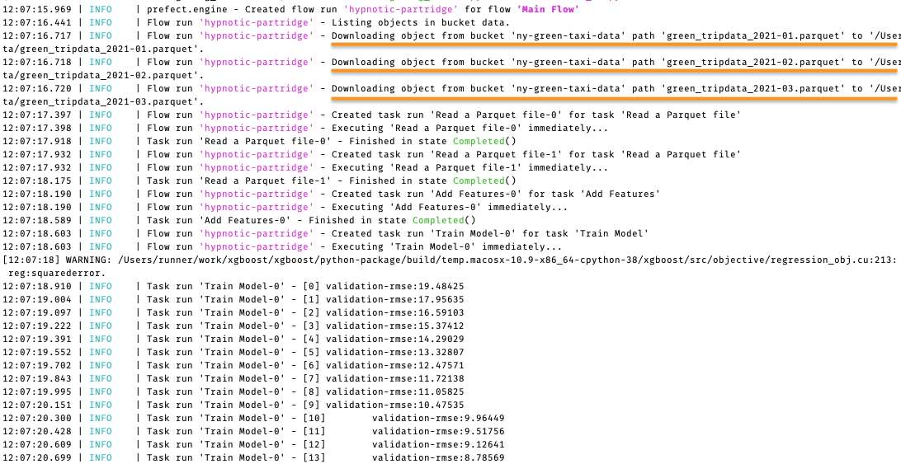

In this post, we’ll be building up on the concepts we discussed in the previous post. If you haven’t read that, I highly recommend checking it out before you continue reading this. You can find the post here.
In the previous post, we build a simple prefect flow that downloads a file from a URL and saves it to a local directory. We used MLflow to track our experiment - train a XGBoost model on the downloaded data. In this post, we’ll be implementing the same workflow but this time we’ll fetch the data from S3 instead of downloading it from a URL.
We’ll setup the S3 bucket and also create a new IAM user and attach the AmazonS3FullAccess policy to it. We’ll use the Access key and Secret key to access the S3 bucket from our code.
Setup S3 Bucket
- Log into your AWS account and click on
Serviceson the top left corner. Search forS3and click on it. - Click on
Create bucketand give it a name. Note: Bucket names must be unique across all AWS accounts. - Keep the default settings and click on
Create bucket.
Upload the data to the S3 bucket
Download the data on your local machine and upload it to the S3 bucket. To keep it simple we’ll use the GUI to upload the data to the S3 bucket. Use the following command in your terminal / command prompt to download the data.
# Download dataset
wget https://d37ci6vzurychx.cloudfront.net/trip-data/green_tripdata_2022-01.parquet # January 2022
wget https://d37ci6vzurychx.cloudfront.net/trip-data/green_tripdata_2022-02.parquet # February 2022
wget https://d37ci6vzurychx.cloudfront.net/trip-data/green_tripdata_2022-03.parquet # March 2022Now, let’s upload the data to the S3 bucket. Follow the steps below to upload the data to the S3 bucket.
- Click on the bucket you just created.
- Create a new folder by clicking on
Create folderand give it a namedata. - Click on
Uploadand select the file you want to upload. - Click on
Uploadagain and wait for the upload to complete.
Awesome! We now have the data in the S3 bucket.
Create IAM user
We’ll now create a new IAM user and attach the AmazonS3FullAccess policy to it. We’ll use the Access key and Secret key to access the S3 bucket from our code. Follow the steps below to create a new IAM user.
- Click on
Serviceson the top left corner. Search forIAMand click on it. - Click on
Userson the left sidebar and then click onAdd user. - Give the user a name and click on
Next. - It is recommended to use groups to manage user’s permissions. Click on
Create groupand give it a name. Search forAmazonS3FullAccessin the Permissions policies table and select it. Click onCreate user group. - Now, select the group you just created and click on
Next. - Click on
Create User.
Generate Access key and Secret key
- Click on the user you just created.
- Click on
Security credentialstab and under the Access keys section click onCreate access key. - Select the
Otheroption and click onNextand then click onCreate access key. - Click on
Showto view the Access key and Secret key. Note: You won’t be able to view the Secret key again so make sure you save it somewhere safe. Alternatively, you can also download the CSV file using theDownload .csv filebutton.
We’re all setup now. Let’s get started with Prefect Blocks.
Prefect Blocks
Blocks serve as a fundamental element in Prefect, allowing the storage of configuration information and providing an interface for seamless interaction with external systems.
Blocks offer a secure way to store authentication credentials for various services such as AWS, GitHub, Slack, and more, enabling seamless integration with Prefect.
By utilizing blocks, you gain access to convenient methods that facilitate interactions with external systems. For instance, you can effortlessly download or upload data from/to an S3 bucket, query or write data in a database, or send messages to Slack channels.
Configuring blocks can be done either programmatically or through the user-friendly interfaces of Prefect Cloud and the Prefect server UI. This flexibility allows you to manage blocks based on your preferred approach.
You can find blocks on the Prefect UI under the Blocks section. Click on Add Block to see the different blocks available.

Don’t worry if you don’t see the different blocks in your UI. We’ll be adding them in the next section. You can skip this section if you find S3 Bucket and AWS Credentials Blocks in the UI.
Adding blocks to Prefect UI
We’ll be using the same environment we created in the previous post. If you haven’t created the environment, you can find the instructions here.
To see the different blocks Prefect has to offer you can find them here. Prefect also allows you to create your own custom blocks. You can find the documentation here.
For this post, we’ll be using the AWS integration prefect-aws to use the following blocks:
S3BucketAwsCredentials
To use these blocks you can pip install the package, then register the blocks you want to use with Prefect Cloud or a Prefect server. Follow the steps below:
- Install the
prefect_awspackage in your environment.
- Register the blocks using the
prefect registercommand.-mflag is used to specify the module name.
Now you should be able to see the blocks in the Prefect UI.
Create S3 Bucket block
We’ll now create a new file create_s3_bucket.py to store the credentials and the S3 bucket configurations. We’ll be using the AwsCredentials and S3Bucket blocks to create the S3 bucket.
create_s3_bucket.py
from time import sleep
from prefect_aws import S3Bucket, AwsCredentials
# Create and save AWS credentials block
def create_aws_creds_block():
# Create AWS credentials object
my_aws_creds_obj = AwsCredentials(
aws_access_key_id = "<ACCESS_KEY>", # Replace with your access key
aws_secret_access_key = "<SECRET_KEY>" # Replace with your secret key
)
# Save the AWS credentials block
my_aws_creds_obj.save(name="my-aws-creds", overwrite=True)
# Create and save S3 bucket block
def create_s3_bucket_block():
# Load AWS credentials block
aws_creds = AwsCredentials.load("my-aws-creds")
# Create S3 bucket object
my_s3_bucket_obj = S3Bucket(
bucket_name = "<BUCKET_NAME>", # Replace with your bucket name
credentials = aws_creds
)
# Save the S3 bucket block
my_s3_bucket_obj.save(name="s3-bucket-example", overwrite=True)
if __name__ == "__main__":
# Create and save AWS credentials block
create_aws_creds_block()
# Sleep for 5 seconds to allow time for the AWS credentials to be saved
sleep(5)
# Create and save S3 bucket block
create_s3_bucket_block()Let’s understand what’s happening in the code above.
- We first create an
AwsCredentialsobject and pass the Access key and Secret key to it. We then save the object as a block using thesavemethod. We also pass theoverwriteargument asTrueto overwrite the block if it already exists. (Note: Use the Access key and Secret key you created in the previous section) - We then create an
S3Bucketobject and pass the bucket name and theAwsCredentialsobject to it. We then save the object as a block using thesavemethod. We also pass theoverwriteargument asTrueto overwrite the block if it already exists.
This allows to store the credentials and configurations in a secure way, and use them in our workflows.
prefect block ls command can be used to list all the blocks. However, since we haven’t registered the above below in Prefect, we won’t be able to see them.
We’ll run the script to create and save the blocks in Prefect. Before running the script, make sure you start the prefect server.
# Make sure to start the prefect server before running the script
prefect server start
# Run the script (In new terminal window)
python create_s3_bucket.pyIf you run the command prefect block ls you should be able to see the blocks. Similarly if you go to the Prefect UI you should be able to see the blocks under the Blocks section.


Now that we have the blocks setup, we can use them in our workflow.
Workflow
We’ll be using the same workflow we created in the previous post with some modifications. We’ll be using the S3Bucket block to download the data from the S3 bucket.
We import the S3Bucket Block using the command from prefect_aws import S3Bucket.
orchestration_s3.py
import os
import pickle
import pathlib
import scipy
import mlflow
import sklearn
import argparse
import pandas as pd
import numpy as np
import xgboost as xgb
from sklearn.feature_extraction import DictVectorizer
from sklearn.metrics import mean_squared_error
from prefect import flow, task
from prefect_aws import S3Bucket
@task(name="Read a Parquet file")
def read_data(filename: str) -> pd.DataFrame:
"""Read data into DataFrame"""
df = pd.read_parquet(filename)
df.lpep_dropoff_datetime = pd.to_datetime(df.lpep_dropoff_datetime)
df.lpep_pickup_datetime = pd.to_datetime(df.lpep_pickup_datetime)
df["duration"] = df.lpep_dropoff_datetime - df.lpep_pickup_datetime
df.duration = df.duration.apply(lambda td: td.total_seconds() / 60)
df = df[(df.duration >= 1) & (df.duration <= 60)]
categorical = ["PULocationID", "DOLocationID"]
df[categorical] = df[categorical].astype(str)
return df
@task(name="Add Features")
def add_features(df_train: pd.DataFrame, df_val: pd.DataFrame) -> tuple([
scipy.sparse._csr.csr_matrix,
scipy.sparse._csr.csr_matrix,
np.ndarray,
np.ndarray,
sklearn.feature_extraction.DictVectorizer,
]):
"""Add features to the model"""
df_train["PU_DO"] = df_train["PULocationID"] + "_" + df_train["DOLocationID"]
df_val["PU_DO"] = df_val["PULocationID"] + "_" + df_val["DOLocationID"]
categorical = ["PU_DO"] #'PULocationID', 'DOLocationID']
numerical = ["trip_distance"]
dv = DictVectorizer()
train_dicts = df_train[categorical + numerical].to_dict(orient="records")
X_train = dv.fit_transform(train_dicts)
val_dicts = df_val[categorical + numerical].to_dict(orient="records")
X_val = dv.transform(val_dicts)
y_train = df_train["duration"].values
y_val = df_val["duration"].values
return X_train, X_val, y_train, y_val, dv
@task(name="Train Model", log_prints=True)
def train_best_model(
X_train: scipy.sparse._csr.csr_matrix,
X_val: scipy.sparse._csr.csr_matrix,
y_train: np.ndarray,
y_val: np.ndarray,
dv: sklearn.feature_extraction.DictVectorizer,
) -> None:
"""train a model with best hyperparams and write everything out"""
with mlflow.start_run():
train = xgb.DMatrix(X_train, label=y_train)
valid = xgb.DMatrix(X_val, label=y_val)
best_params = {
"learning_rate": 0.09585355369315604,
"max_depth": 30,
"min_child_weight": 1.060597050922164,
"objective": "reg:linear",
"reg_alpha": 0.018060244040060163,
"reg_lambda": 0.011658731377413597,
"seed": 42,
}
mlflow.log_params(best_params)
booster = xgb.train(
params=best_params,
dtrain=train,
num_boost_round=100,
evals=[(valid, "validation")],
early_stopping_rounds=20,
)
y_pred = booster.predict(valid)
rmse = mean_squared_error(y_val, y_pred, squared=False)
mlflow.log_metric("rmse", rmse)
pathlib.Path("models").mkdir(exist_ok=True)
with open("models/preprocessor.b", "wb") as f_out:
pickle.dump(dv, f_out)
mlflow.log_artifact("models/preprocessor.b", artifact_path="preprocessor")
mlflow.xgboost.log_model(booster, artifact_path="models_mlflow")
return None
@flow(name="Main Flow")
def main_flow():
"""Main flow of the program"""
# MLflow settings
mlflow.set_tracking_uri("sqlite:///mlflow.db")
mlflow.set_experiment("nyc-taxi-experiment")
# Load
s3_bucket_block = S3Bucket.load("s3-bucket-example")
s3_bucket_block.download_folder_to_path(from_folder="data", to_folder="data")
df_train = read_data("./data/green_tripdata_2021-01.parquet")
df_val = read_data("./data/green_tripdata_2021-02.parquet")
# Transform
X_train, X_val, y_train, y_val, dv = add_features(df_train, df_val)
# Train
train_best_model(X_train, X_val, y_train, y_val, dv)
if __name__ == "__main__":
main_flow()To keep the workflow simple, we have removed the fetch and download_and_read (Subflow) functions. We have also made some changes to how the main_flow is called. The main change is that we are using the S3Bucket block to download the data from the S3 bucket.
To better understand the above script you can read my previous post here.
# Loads the configuration of the S3 Bucket from the S3Bucket Block
s3_bucket_block = S3Bucket.load("s3-bucket-block")
# Downloads the data from the S3 bucket folder name "data" to the local folder "data"
s3_bucket_block.download_folder_to_path(from_folder="data", to_folder="data")Run the above script using the command python orchestration_s3.py

Further Reading
Conclusion
Prefect Blocks are a great way to reuse code and configurations, and to share them with your team. They also help secure your credentials and other sensitive information. In this tutorial, we have seen how to create a Prefect Block for the S3 Bucket. We have also seen how to use the S3 Bucket Block in a Prefect Flow.
Thank you for reading and I hope you found this notebook helpful. Upvote if you liked it, comment if you loved it. Hope to see you guys in the next one. Peace!